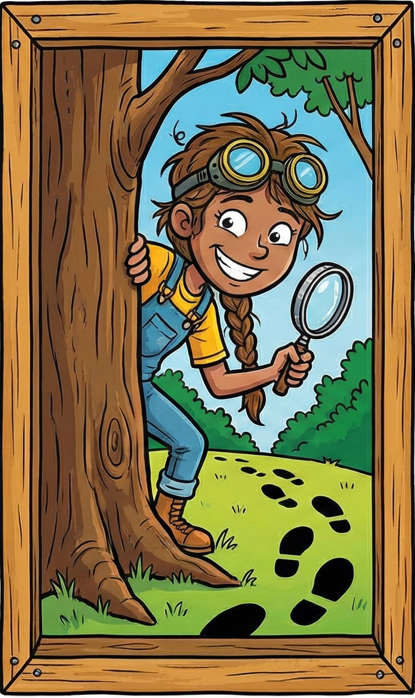

The frequency of a wave is the number of times the wave pattern repeats every second. The amplitude of a wave is the maximum variation, or "height" of the wave.
Play with the sliders above.
How does changing the amplitude and the frequency affect your perception of the sound?
Here are the frequencies for "Twinkle, Twinkle, Little Star":
Below, we did something to the frequencies. Can you say what we did?
Sounds like
the original
the original
Mark which of these variations sounds like the original (only higher / lower)
We see that our audio perception recognizes melodies as being "the same" if we multiply or divide all the frequencies by the same number - but NOT if we add or subtract the same number! It seems our ear "knows" - and likes - to multiply and divide.
Here's the Big Ben melody, in the key of A Major:
The real Big Ben melody is actually in the key of C Major, so the last note ("the tonic") has a frequency of 261.63 Hz.
Melody Sandbox
Can you write the sequence of frequencies for the "true" Big Ben melody in C Major?
Standard Calculator
